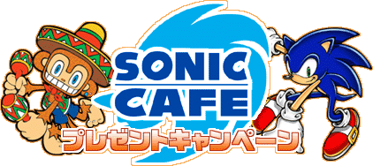

Sonic Cafe
Introduction
Sonic Cafe was a SEGA mobile phone game service set up by Sonic Team to distribute software for Japanese mobile phones.
The service launched on January 26th 2001. For a fee of ¥315 a month (after tax), the user received access to the entire library of currently available games and could download them as many times as they wanted to. Usually a new game would be launched every month, though other content was also provided, such as game-related images and ringtones. The service would receive a version for Vodafone Live! launched on June 16th 2004 and also later branch out onto EZweb in January 2005.
Sonic Cafe was only available in Japan, however, select few of these games became available in the United States and Europe through the SEGA Mobile service.
The Sonic Cafe service ended on December 1st 2007.
Choose a year
Reference sources
Sonic Cafe - Sega Retro
Sonic Cafe | Sonic Wiki Zone - Fandom
Sonic Cafe - Lost Media Wiki
The GHZ - MUSEUM
動画投稿をする人【仮】 - YouTube